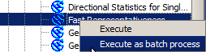
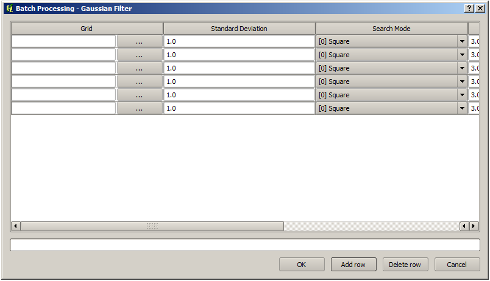

The SEXTANTE batch processing interface¶
Introduction¶
SEXTANTE algorithms (including models) can be executed as a batch process. That is, they can be executed using not a single set of inputs, but several of them, executing the algorithm as many times as needed. This is useful when processing large amounts of data, since it is not necessary to launch the algorithm many times from the toolbox.
To execute an algorithm as a batch process, right-click on its name in the toolbox and select the Execute as batch process option in the pop-up menu that will appear
The parameters table¶
Executing a batch process is similar to performing a single execution of an algorithm. Parameter values have to be defined, but in this case we need not just a single value for each parameter, but a set of them instead, one for each time the algorithm has to be executed. Values are introduced using a table like the one shown next.
Each line of this table represents a single execution of the algorithm, and each cell contains the value of one of the parameters. It is similar to the parameters dialog that you see when executing an algorithm from the toolbox, but with a different arrangement.
By default, the table contains just two rows. You can add or remove rows using the buttons on the lower part of the window.
Once the size of the table has been set, it has to be filled with the desired values
Filling the parameters table¶
For most parameters, setting its value is trivial. Just type the value or select it from the list of available options, depending on the parameter type.
The main differences are found for parameters representing layers or tables, and for output filepaths. Regarding input layers and tables, when an algorithm is executed as part of a batch process those input data objects are taken directly from files, and not from the set of them already opened in QGIS. For this reason, any algorithm can be executed as a batch process even if no data objects at all are opened and the algorithm cannot be run from the toolbox.
Filenames for input data objects are introduced directly typing or, more conveniently, clicking on the button on the right hand of the cell, which shows a typical file chooser dialog. Multiple files can be selected at once. If the input parameter represents a single data object and several files are selected, each one of them will be put in a separate row, adding new ones if needed. If it represents a multiple input, all the selected files will be added to a single cell, separated by semicolons.
Output data objects are always saved to a file and, unlike when executing an algorithm from the toolbox, saving to a temporary one is not permitted. You can type the name directly or use the file chooser dialog that appears when clicking on the accompanying button.
Once you select the file, a new dialog is shown to allow for autocompletion of other cells in the same column (same parameter).

If the default value (Do not autocomplete) is selected, SEXTANTE will just put the selected filename in the selected cell from the parameters table. If any of the other options is selected, all the cells below the selected one will be automatically filled based on a defined criteria. This way, it is much easier to fill the table, and the batch process can be defined with less effort.
Automatic filling can be done simply adding correlative numbers to the selected filepath, or appending the value of another field at the same row. This is particularly useful for naming output data object according to input ones.

Executing the batch process¶
To execute the batch process once you have introduced all the necessary values, just click on OK. SEXTANTE will show the progress of the global batch process in the progress bar in the lower part of the dialog.